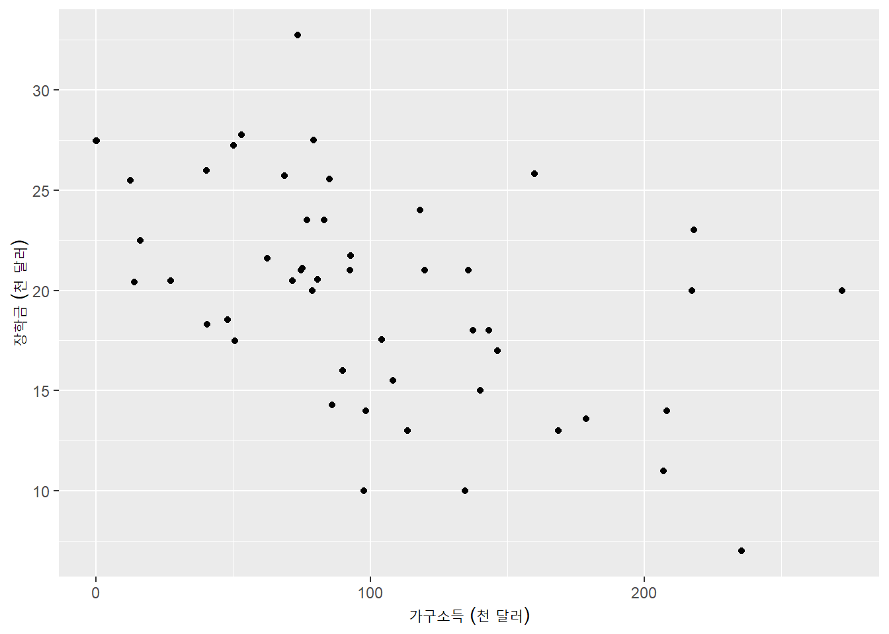
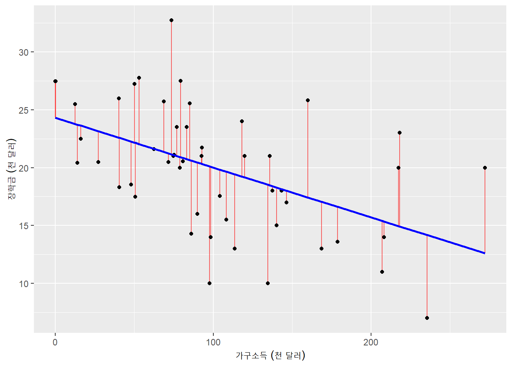
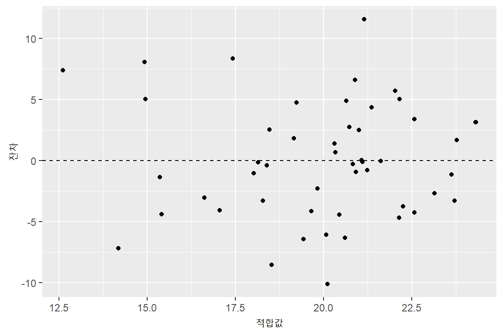
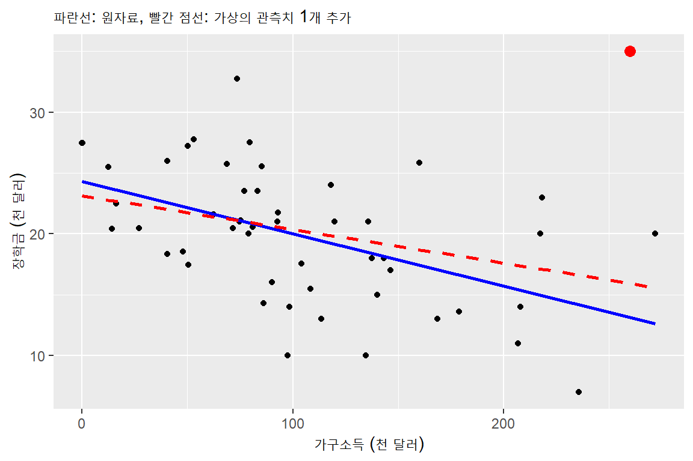
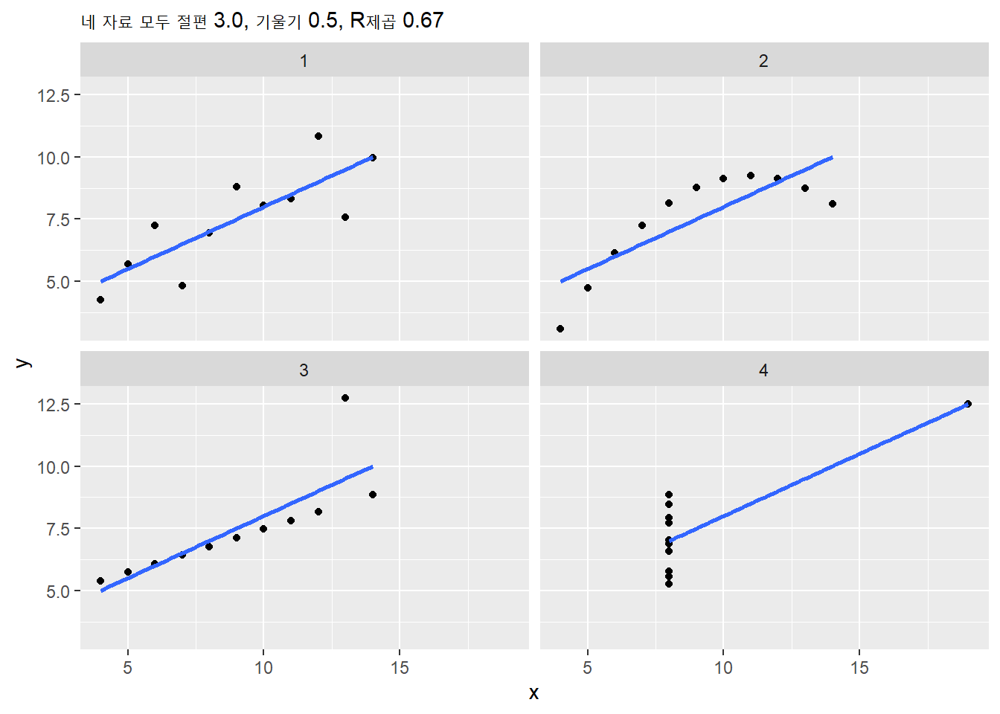
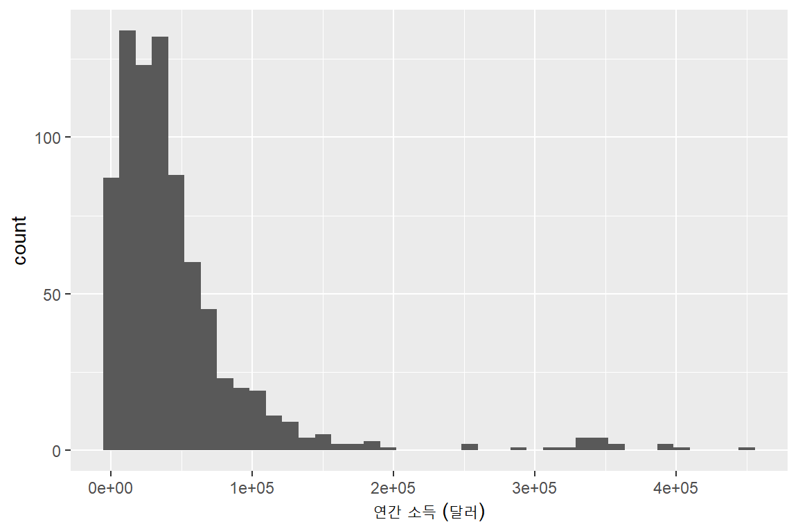
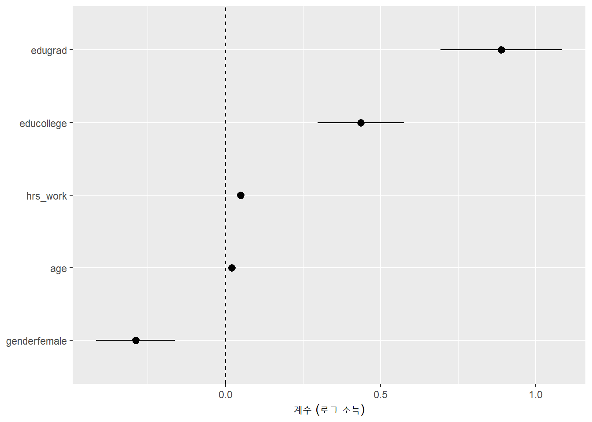

library(tidyverse)
library(janitor)
library(skimr)
library(broom) # 회귀분석 결과를 데이터 프레임으로 정리
library(modelsummary) # 회귀분석 결과표8주차. 회귀분석
1 이번 주 내용
- 지금까지는 그림을 그리고 집단별 평균을 비교하는 방식으로 변수 사이의 관계를 살펴보았음
- 2주차:
group_by()+summarize()로 집단별 평균 계산 - 7주차: 중력모형에서 산점도에
geom_smooth(method = "lm")으로 직선을 추가
- 2주차:
- 이번 주에는 이 직선을 직접 추정하고 그 결과를 읽고 보고하는 방법을 배움
- Part 1. 단순회귀: 설명변수 하나로 회귀분석의 기본 언어(추정, 해석, 예측, 불확실성, 적합도, 보고)를 익힘
- Part 2. 다중회귀: 설명변수를 늘려 가며 “다른 조건이 같다면”의 의미, 더미변수, 교호작용, 비선형 항을 다룸
- 이번 주의 회귀분석은 데이터의 패턴을 요약하는 도구로 사용함
- 회귀분석을 이용한 본격적인 예측은 10~11주차, 인과관계는 12~13주차에서 다룸
- 새로 설치할 패키지:
modelsummarybroom은tidyverse를 설치할 때 함께 설치되지만library(tidyverse)로 자동으로 불러와지지는 않으므로 따로 불러야 함
library(openintro) # 이번 주 데이터 (elmhurst, acs12)- 분석에 사용할 데이터로는
openintro패키지의elmhurst와acs12를 이용
2 Part 1. 단순회귀
2.1 데이터: 대학 장학금과 가구소득
elmhurst: 미국 Elmhurst College의 2011년 신입생 중 50명의 표본family_income: 가구소득 (천 달러)gift_aid: 학교로부터 받은 장학금 (상환 의무가 없는 지원금, 천 달러)price_paid: 실제로 낸 금액 (등록금 - 장학금, 천 달러)
- 질문: 가구소득이 높은 학생일수록 장학금을 얼마나 적게 받는가?
elmhurst |>
skim()| Name | elmhurst |
| Number of rows | 50 |
| Number of columns | 3 |
| _______________________ | |
| Column type frequency: | |
| numeric | 3 |
| ________________________ | |
| Group variables | None |
Variable type: numeric
| skim_variable | n_missing | complete_rate | mean | sd | p0 | p25 | p50 | p75 | p100 | hist |
|---|---|---|---|---|---|---|---|---|---|---|
| family_income | 0 | 1 | 101.78 | 63.21 | 0.00 | 64.08 | 88.06 | 137.17 | 271.97 | ▅▇▃▂▁ |
| gift_aid | 0 | 1 | 19.94 | 5.46 | 7.00 | 16.25 | 20.47 | 23.52 | 32.72 | ▂▃▇▆▁ |
| price_paid | 0 | 1 | 19.54 | 5.98 | 8.53 | 15.00 | 19.50 | 23.63 | 35.00 | ▂▇▆▃▁ |
2.2 회귀의 동기: 산점도와 그룹 평균
- 먼저 산점도를 그려 관계의 모양을 확인
elmhurst |>
ggplot(aes(x = family_income, y = gift_aid)) +
geom_point() +
labs(x = "가구소득 (천 달러)", y = "장학금 (천 달러)")
- 가구소득이 높을수록 장학금이 적은 경향이 있으나 점들이 넓게 흩어져 있음
- 2주차에서 배운 방법으로 가구소득 구간별 장학금의 평균을 구해 보면
elmhurst |>
mutate(income_group = cut(family_income, breaks = c(-Inf, 50, 100, 150, Inf))) |>
group_by(income_group) |>
summarize(n = n(),
mean_income = mean(family_income),
mean_aid = mean(gift_aid)) |>
arrange(income_group)# A tibble: 4 × 4
income_group n mean_income mean_aid
<fct> <int> <dbl> <dbl>
1 (-Inf,50] 9 22.1 23.0
2 (50,100] 21 77.3 21.6
3 (100,150] 11 127. 17.3
4 (150, Inf] 9 207. 16.4cut(): 수치형 변수를 구간으로 나누어 범주형 변수로 만드는 함수소득 구간이 높아질수록 평균 장학금이 23.0 → 21.6 → 17.3 → 16.4 (천 달러)로 줄어듦
구간별 평균은 구간을 어떻게 나누느냐에 따라 달라지고, 구간 안에서의 차이는 무시함
회귀분석은 “\(x\)에 따라 \(y\)의 평균이 어떻게 달라지는가”를 하나의 직선으로 요약하는 방법
elmhurst |>
ggplot(aes(x = family_income, y = gift_aid)) +
geom_point() +
geom_smooth(method = "lm", se = FALSE) +
labs(x = "가구소득 (천 달러)", y = "장학금 (천 달러)")
2.3 단순회귀와 최소제곱법
2.3.1 모형
\[ y_i = \beta_0 + \beta_1 x_i + \varepsilon_i \]
- \(y_i\): 종속변수 (설명하려는 변수, 여기서는 장학금)
- \(x_i\): 설명변수 (여기서는 가구소득)
- \(\beta_0\): 절편, \(\beta_1\): 기울기
- \(\varepsilon_i\): 오차항. 직선으로 설명되지 않는 나머지 부분
2.3.2 최소제곱법 (OLS, Ordinary Least Squares)
- 데이터로부터 \(\beta_0, \beta_1\)의 값을 정하는 방법
- 직선이 예측한 값 \(\hat y_i = \hat\beta_0 + \hat\beta_1 x_i\)를 적합값 (fitted value), 실제값과 적합값의 차이 \(e_i = y_i - \hat y_i\)를 잔차 (residual)라고 함
- 최소제곱법은 잔차 제곱의 합 \(\sum_i e_i^2\)이 가장 작아지도록 직선을 선택
- 아래 그림의 빨간 선분이 잔차이며, 이 선분 길이의 제곱의 합이 가장 작은 직선이 회귀선

2.3.3 lm()으로 추정하기
lm(종속변수 ~ 설명변수, data = 데이터)
fit1 <- lm(gift_aid ~ family_income, data = elmhurst)
fit1
Call:
lm(formula = gift_aid ~ family_income, data = elmhurst)
Coefficients:
(Intercept) family_income
24.31933 -0.04307 summary()로 자세한 결과를 볼 수 있음
summary(fit1)
Call:
lm(formula = gift_aid ~ family_income, data = elmhurst)
Residuals:
Min 1Q Median 3Q Max
-10.1128 -3.6234 -0.2161 3.1587 11.5707
Coefficients:
Estimate Std. Error t value Pr(>|t|)
(Intercept) 24.31933 1.29145 18.831 < 2e-16 ***
family_income -0.04307 0.01081 -3.985 0.000229 ***
---
Signif. codes: 0 '***' 0.001 '**' 0.01 '*' 0.05 '.' 0.1 ' ' 1
Residual standard error: 4.783 on 48 degrees of freedom
Multiple R-squared: 0.2486, Adjusted R-squared: 0.2329
F-statistic: 15.88 on 1 and 48 DF, p-value: 0.0002289summary()의 출력은 읽기에는 좋지만 다른 작업에 쓰기 불편함broom패키지의 함수들은 결과를 데이터 프레임(tibble)으로 돌려주므로 지금까지 배운dplyr,ggplot2와 함께 쓰기 편함
| 함수 | 반환하는 내용 |
|---|---|
tidy() |
계수 표 (추정값, 표준오차, t값, p값, 신뢰구간) |
glance() |
모형 전체의 요약 (\(R^2\), 잔차 표준오차, 관측치 수 등) |
augment() |
원자료에 적합값(.fitted)과 잔차(.resid) 등을 추가 |
tidy(fit1)# A tibble: 2 × 5
term estimate std.error statistic p.value
<chr> <dbl> <dbl> <dbl> <dbl>
1 (Intercept) 24.3 1.29 18.8 8.28e-24
2 family_income -0.0431 0.0108 -3.98 2.29e- 4glance(fit1)# A tibble: 1 × 12
r.squared adj.r.squared sigma statistic p.value df logLik AIC BIC
<dbl> <dbl> <dbl> <dbl> <dbl> <dbl> <dbl> <dbl> <dbl>
1 0.249 0.233 4.78 15.9 0.000229 1 -148. 302. 308.
# ℹ 3 more variables: deviance <dbl>, df.residual <int>, nobs <int>2.4 계수의 해석
추정된 회귀선: \(\widehat{\text{gift\_aid}} = 24.32 - 0.0431 \times \text{family\_income}\)
기울기 \(\hat\beta_1 = -0.0431\)
- 가구소득이 1 단위(천 달러) 높은 학생은 장학금이 평균적으로 0.0431 단위(천 달러), 즉 약 43달러 적음
- 단위를 바꾸어 말하면 더 이해하기 쉬움: 가구소득이 1만 달러 높으면 장학금은 약 431달러 적음
절편 \(\hat\beta_0 = 24.32\)
- 가구소득이 0인 학생의 평균 장학금이 약 24,320달러
- 이 자료에는 가구소득이 0에 가까운 학생이 있으므로 해석할 수 있으나, 일반적으로 \(x = 0\)이 자료의 범위 밖이면 절편 자체는 큰 의미가 없음
해석할 때는 항상 단위를 확인하고, 계수를 “평균적으로”, “~한 경향”으로 읽음
2.5 적합값, 잔차, 그리고 predict()
2.5.1 적합값과 잔차
augment()는 원자료에 적합값과 잔차를 붙여 줌
elm_fit <- augment(fit1)
elm_fit |>
select(family_income, gift_aid, .fitted, .resid) |>
head()# A tibble: 6 × 4
family_income gift_aid .fitted .resid
<dbl> <dbl> <dbl> <dbl>
1 92.9 21.7 20.3 1.40
2 0.25 27.5 24.3 3.16
3 53.1 27.8 22.0 5.72
4 50.2 27.2 22.2 5.06
5 138. 18 18.4 -0.392
6 48.0 18.5 22.3 -3.73 - 첫 번째 학생: 가구소득 92.9 (천 달러), 실제 장학금 21.7, 적합값 20.3 → 잔차 1.4 (모형보다 많이 받음)
fitted(fit1),residuals(fit1)로 같은 값을 벡터로 얻을 수도 있음
2.5.2 predict(): 새로운 값에 대한 예측값
predict(모형, newdata = 새 데이터)newdata는 모형에 사용한 설명변수와 같은 이름의 변수를 가진 데이터 프레임이어야 함newdata를 생략하면 원자료의 적합값을 돌려줌 (fitted()와 같음)
new_income <- tibble(family_income = c(50, 100, 150))
predict(fit1, newdata = new_income) 1 2 3
22.16575 20.01216 17.85858 가구소득 5만, 10만, 15만 달러인 학생의 예상 장학금은 각각 약 22,200달러, 20,000달러, 17,900달러
예측값을 데이터 프레임에 붙여 두면 표나 그림으로 쓰기 편함
new_income |>
mutate(pred_aid = predict(fit1, newdata = new_income))# A tibble: 3 × 2
family_income pred_aid
<dbl> <dbl>
1 50 22.2
2 100 20.0
3 150 17.9- 적합값과 새로운 값에 대한 예측의 구분
- 적합값은 모형을 추정할 때 사용한 자료에 대한 예측 (in-sample)
newdata에 넣은 값은 모형 추정에 사용하지 않은 관측치에 대한 예측 (out-of-sample)- 모형이 사용한 자료를 얼마나 잘 맞추는가와 새로운 자료를 얼마나 잘 예측하는가는 다를 수 있음. 예측의 정확도를 평가하는 방법은 10주차에서 다룸
- 외삽 (extrapolation) 주의: 자료의 범위(가구소득 0 ~ 272천 달러)를 크게 벗어난 값의 예측은 믿기 어려움
predict(fit1, newdata = tibble(family_income = 700)) 1
-5.830827 - 가구소득 70만 달러인 학생의 장학금이 음수(약 -5,800달러)로 예측됨. 직선이 자료 범위 밖에서도 성립한다는 보장이 없음
2.6 잔차 그림과 이상치
2.6.1 잔차 그림
- 직선이 자료를 잘 요약한다면 잔차에 뚜렷한 패턴이 없어야 함
- 적합값(또는 \(x\))을 가로축, 잔차를 세로축으로 하는 그림을 그려 확인
elm_fit |>
ggplot(aes(x = .fitted, y = .resid)) +
geom_point() +
geom_hline(yintercept = 0, linetype = "dashed") +
labs(x = "적합값", y = "잔차")
- 잔차가 0을 중심으로 위아래에 고르게 흩어져 있으면 괜찮음
- 문제의 신호
- 곡선 모양: 관계가 직선이 아님
- 부채꼴 모양: 적합값이 커질수록 잔차가 커지는 경우. 종속변수에 로그를 취하면 나아지는 경우가 많음
- 다른 점들과 멀리 떨어진 점: 이상치
2.6.2 이상치의 영향
- 회귀선은 잔차의 제곱을 최소화하므로 멀리 떨어진 점 하나가 직선을 크게 움직일 수 있음
- 특히 \(x\)가 자료의 가장자리에 있는 점이 영향을 크게 미침
- 예시: 가구소득 26만 달러이면서 장학금 35천 달러를 받은 학생 한 명이 가상으로 추가되었다면
# A tibble: 2 × 5
term estimate std.error statistic p.value
<chr> <dbl> <dbl> <dbl> <dbl>
1 (Intercept) 24.3 1.29 18.8 8.28e-24
2 family_income -0.0431 0.0108 -3.98 2.29e- 4# A tibble: 2 × 5
term estimate std.error statistic p.value
<chr> <dbl> <dbl> <dbl> <dbl>
1 (Intercept) 23.1 1.47 15.8 7.71e-21
2 family_income -0.0277 0.0118 -2.34 2.37e- 2
- 50개의 관측치에 1개를 추가했을 뿐인데 기울기가 -0.043에서 -0.028로 약 1/3 줄어듦
- 이상치를 발견하면 바로 지우기보다는
- 입력 오류인지 확인하고
- 오류가 아니라면 왜 그런 값이 나왔는지 이해한 다음
- 그 관측치를 포함한 결과와 제외한 결과를 함께 보고하는 것이 좋음
2.7 불확실성: 표준오차, 신뢰구간, p값
- 지금의 추정값은 50명의 표본에서 얻은 것. 다른 50명을 뽑으면 기울기가 달라짐
- 1학년 통계학에서 배운 표본평균의 표준오차, 신뢰구간, 가설검정이 회귀계수에도 그대로 적용됨
tidy(fit1, conf.int = TRUE)# A tibble: 2 × 7
term estimate std.error statistic p.value conf.low conf.high
<chr> <dbl> <dbl> <dbl> <dbl> <dbl> <dbl>
1 (Intercept) 24.3 1.29 18.8 8.28e-24 21.7 26.9
2 family_income -0.0431 0.0108 -3.98 2.29e- 4 -0.0648 -0.0213| 열 | 의미 |
|---|---|
estimate |
추정값 \(\hat\beta\) |
std.error |
표준오차: 표본이 달라질 때 추정값이 흔들리는 정도 |
statistic |
t값 = 추정값 / 표준오차 |
p.value |
참값이 0이라면 이 정도로 큰 (절대값의) t값이 나올 확률 |
conf.low, conf.high |
95% 신뢰구간 |
- 기울기의 95% 신뢰구간은 약 -0.065 ~ -0.021
- 0을 포함하지 않음 ↔︎ p값(0.0002)이 0.05보다 작음 → 5% 유의수준에서 “가구소득과 장학금 사이의 관계가 없다”는 귀무가설을 기각
- 신뢰구간도 단위를 바꿔서 읽으면 이해하기 쉬움: 가구소득이 1만 달러 높을 때 장학금은 약 210 ~ 650달러 적음
- p값은 “0과 다른가”에 대한 답이지 “얼마나 큰가”, “중요한가”에 대한 답이 아님
- 관측치가 매우 많으면 아주 작은 차이도 통계적으로 유의하게 나옴
- 관측치가 적으면 실제로 중요한 차이도 통계적으로 유의하지 않을 수 있음
- 따라서 결과를 보고할 때는 p값만이 아니라 추정값의 크기를 의미 있는 단위로 함께 말해야 함
- 나쁜 예: “가구소득은 장학금에 유의한 영향을 준다”
- 좋은 예: “가구소득이 1만 달러 높은 학생은 장학금이 평균적으로 약 430달러 적으며 (95% 신뢰구간: 210 ~ 650달러), 이 관계는 5% 수준에서 통계적으로 유의하다”
2.8 적합도: \(R^2\)
glance(fit1) |>
select(r.squared, sigma, nobs)# A tibble: 1 × 3
r.squared sigma nobs
<dbl> <dbl> <int>
1 0.249 4.78 50- \(R^2\) (결정계수): 종속변수의 변동 중 회귀선으로 설명되는 비율. 0과 1 사이
- \(R^2 = 0.249\): 장학금의 변동 중 약 25%가 가구소득으로 설명됨
sigma(잔차 표준오차): 잔차의 표준편차. 모형으로 예측했을 때 대략 ±4.8천 달러 정도의 오차가 있다는 의미
- \(R^2\)가 낮다고 해서 기울기가 쓸모없는 것은 아님
- \(R^2\)가 0.25로 낮더라도 기울기는 정확히 추정되어 있음 (p값이 매우 작음)
- 장학금은 가구소득 외에도 성적, 가족 수 등 여러 요인으로 결정되므로 \(R^2\)가 낮은 것은 자연스러움
- \(R^2\)가 높다고 해서 직선이 적절하거나 인과관계가 있다는 뜻도 아님
- 예: R에 내장된
anscombe데이터의 네 가지 자료는 회귀계수와 \(R^2\)가 거의 같지만 모양이 전혀 다름

- 1: 직선이 적절한 경우, 2: 곡선 관계, 3: 이상치 하나가 직선을 끌어당김, 4: 점 하나가 기울기를 결정
- 숫자만 보지 말고 반드시 그림을 함께 보아야 하는 이유
- 비슷한 사례로 다음 Datasaurus Dozen도 참고
2.9 로그 변환과 해석
2.9.1 새로운 데이터: 미국 근로자의 소득
acs12: 미국 인구조사국의 American Community Survey (2012) 중 2,000명의 표본- 이 중 취업자이면서 소득이 0보다 큰 사람만 사용
acs_emp <- acs12 |>
filter(employment == "employed", income > 0, !is.na(hrs_work)) |>
select(income, hrs_work, age, gender, edu)
acs_emp |>
skim()| Name | acs_emp |
| Number of rows | 787 |
| Number of columns | 5 |
| _______________________ | |
| Column type frequency: | |
| factor | 2 |
| numeric | 3 |
| ________________________ | |
| Group variables | None |
Variable type: factor
| skim_variable | n_missing | complete_rate | ordered | n_unique | top_counts |
|---|---|---|---|---|---|
| gender | 0 | 1 | FALSE | 2 | mal: 440, fem: 347 |
| edu | 0 | 1 | FALSE | 3 | hs : 473, col: 222, gra: 92 |
Variable type: numeric
| skim_variable | n_missing | complete_rate | mean | sd | p0 | p25 | p50 | p75 | p100 | hist |
|---|---|---|---|---|---|---|---|---|---|---|
| income | 0 | 1 | 47236.21 | 57849.87 | 50 | 15000 | 34000 | 58000 | 450000 | ▇▁▁▁▁ |
| hrs_work | 0 | 1 | 39.15 | 12.65 | 1 | 36 | 40 | 42 | 99 | ▁▇▂▁▁ |
| age | 0 | 1 | 42.73 | 14.49 | 16 | 30 | 43 | 53 | 94 | ▆▇▇▂▁ |
| 변수 | 의미 |
|---|---|
income |
연간 소득 (달러) |
hrs_work |
주당 근로시간 |
age |
연령 |
gender |
성별 (male, female) |
edu |
학력 (hs or lower: 고졸 이하, college: 대졸, grad: 대학원) |
- 5주차의 임금 자료와 마찬가지로 소득은 오른쪽으로 크게 치우쳐 있음 (평균 47,236달러 > 중앙값 34,000달러)
acs_emp |>
ggplot(aes(x = income)) +
geom_histogram(bins = 40) +
labs(x = "연간 소득 (달러)")
2.9.2 세 가지 모형
- 주당 근로시간과 연간 소득의 관계를 세 가지 방식으로 추정
| 모형 | 식 | \(\beta_1\)의 해석 |
|---|---|---|
| 수준-수준 (level-level) | \(y = \beta_0 + \beta_1 x\) | \(x\)가 1 증가하면 \(y\)가 \(\beta_1\) 단위 증가 |
| 로그-수준 (log-level) | \(\ln y = \beta_0 + \beta_1 x\) | \(x\)가 1 증가하면 \(y\)가 약 \(100 \times \beta_1\) % 증가 |
| 로그-로그 (log-log) | \(\ln y = \beta_0 + \beta_1 \ln x\) | \(x\)가 1% 증가하면 \(y\)가 약 \(\beta_1\) % 증가 (탄력성) |
- 6주차에서 배운 것처럼 로그의 차이는 변화가 작을 때 증가율의 근사이기 때문에 이런 해석이 가능함
acs_emp <- acs_emp |>
mutate(log_income = log(income))
m_ll <- lm(income ~ hrs_work, data = acs_emp)
m_gl <- lm(log_income ~ hrs_work, data = acs_emp)
m_gg <- lm(log_income ~ log(hrs_work), data = acs_emp)
tidy(m_ll)# A tibble: 2 × 5
term estimate std.error statistic p.value
<chr> <dbl> <dbl> <dbl> <dbl>
1 (Intercept) -14613. 6300. -2.32 2.06e- 2
2 hrs_work 1580. 153. 10.3 1.74e-23tidy(m_gl)# A tibble: 2 × 5
term estimate std.error statistic p.value
<chr> <dbl> <dbl> <dbl> <dbl>
1 (Intercept) 7.92 0.113 70.1 0
2 hrs_work 0.0579 0.00275 21.1 1.49e-78tidy(m_gg)# A tibble: 2 × 5
term estimate std.error statistic p.value
<chr> <dbl> <dbl> <dbl> <dbl>
1 (Intercept) 4.07 0.265 15.4 8.14e-47
2 log(hrs_work) 1.70 0.0731 23.3 9.40e-92- 수준-수준: 주당 근로시간이 1시간 많으면 연간 소득이 평균적으로 약 1,580달러 많음
- 로그-수준: 주당 근로시간이 1시간 많으면 연간 소득이 약 5.8% 많음
- 정확히는 \(e^{0.0579} - 1 \approx 0.060\), 즉 6.0%. 계수가 작을 때(대략 0.1 이하)는 계수 \(\times\) 100으로 읽어도 큰 차이가 없음
exp(coef(m_gl)[["hrs_work"]]) - 1[1] 0.05963057- 로그-로그: 주당 근로시간이 1% 많으면 연간 소득이 약 1.7% 많음 (탄력성 1.7)
- 7주차 중력모형에서 GDP의 계수를 탄력성으로 읽은 것과 같은 해석
2.9.3 로그 모형의 예측값
- 종속변수가 로그이면
predict()의 결과도 로그 단위이므로exp()로 되돌려야 함
new_hrs <- tibble(hrs_work = c(20, 40))
new_hrs |>
mutate(pred_log = predict(m_gl, newdata = new_hrs),
pred_income = exp(pred_log))# A tibble: 2 × 3
hrs_work pred_log pred_income
<dbl> <dbl> <dbl>
1 20 9.08 8806.
2 40 10.2 28046.- 이렇게 되돌린 값은 소득의 평균이 아니라 대략 중앙값에 가까우므로 평균보다 낮게 나타남
2.10 결과 보고하기
2.10.1 회귀표
- 여러 모형을 나란히 비교하는 표:
modelsummary()- 괄호 안은 표준오차, 별(
*)은 유의수준
- 괄호 안은 표준오차, 별(
modelsummary(
list("로그-수준" = m_gl, "로그-로그" = m_gg),
stars = TRUE,
gof_map = c("nobs", "r.squared")
)| 로그-수준 | 로그-로그 | |
|---|---|---|
| + p < 0.1, * p < 0.05, ** p < 0.01, *** p < 0.001 | ||
| (Intercept) | 7.925*** | 4.070*** |
| (0.113) | (0.265) | |
| hrs_work | 0.058*** | |
| (0.003) | ||
| log(hrs_work) | 1.705*** | |
| (0.073) | ||
| Num.Obs. | 787 | 787 |
| R2 | 0.362 | 0.409 |
마이크로소프트 워드 문서로 출력하려면
output = "table1.docx"와 같이 저장할 파일 이름을 지정할 수 있음 (추가로pandoc패키지 설치 필요함)계수 표를 파일로 저장하려면
tidy()의 결과를write_csv()로 저장
tidy(m_gl, conf.int = TRUE) |>
write_csv("output/week08_m_gl.csv")2.10.2 결과를 문장으로 쓰기
- 회귀분석의 결과는 결국 문장으로 전달해야 함. 다음 네 가지를 포함하도록 연습
- 무엇과 무엇의 관계인가 (변수와 단위)
- 방향과 크기 (의미 있는 단위로)
- 불확실성 (신뢰구간 또는 유의성)
- 한계 (어떤 자료, 인과관계가 아님 등)
- 예시
2012년 미국 취업자 787명의 자료에서 주당 근로시간이 1시간 많은 사람은 연간 소득이 평균적으로 약 6% 높았다 (95% 신뢰구간: 5.4 ~ 6.5%). 근로시간은 소득의 로그값의 변동 중 약 36%를 설명한다. 다만 이 결과는 근로시간과 소득의 연관성을 보여줄 뿐이며, 근로시간을 늘리면 소득이 그만큼 늘어난다는 의미는 아니다.
tidy(m_gl, conf.int = TRUE) |>
filter(term == "hrs_work") |>
mutate(across(c(estimate, conf.low, conf.high), \(b) (exp(b) - 1) * 100))# A tibble: 1 × 7
term estimate std.error statistic p.value conf.low conf.high
<chr> <dbl> <dbl> <dbl> <dbl> <dbl> <dbl>
1 hrs_work 5.96 0.00275 21.1 1.49e-78 5.39 6.543 Part 2. 다중회귀
3.1 다중회귀: “다른 조건이 같다면”
3.1.1 성별 소득 차이
- 성별만 설명변수로 넣으면
mm1 <- lm(log_income ~ gender, data = acs_emp)
tidy(mm1)# A tibble: 2 × 5
term estimate std.error statistic p.value
<chr> <dbl> <dbl> <dbl> <dbl>
1 (Intercept) 10.5 0.0561 187. 0
2 genderfemale -0.645 0.0845 -7.64 6.22e-14genderfemale= -0.645: 여성의 연간 소득이 남성보다 로그 값으로 0.645 낮음. \(e^{-0.645} - 1 \approx -0.48\)이므로 약 48% 낮음- 그런데 남녀는 근로시간도 다름
acs_emp |>
group_by(gender) |>
summarize(mean_hrs = mean(hrs_work),
mean_income = mean(income))# A tibble: 2 × 3
gender mean_hrs mean_income
<fct> <dbl> <dbl>
1 male 42.2 59698.
2 female 35.3 31435.- 여성의 평균 주당 근로시간이 약 7시간 짧음. 연간 소득의 차이 중 일부는 근로시간의 차이 때문일 수 있음
3.1.2 통제변수 추가
- 다중회귀모형
\[ \ln y_i = \beta_0 + \beta_1 x_{1i} + \beta_2 x_{2i} + \cdots + \varepsilon_i \]
- \(\beta_1\): 다른 설명변수가 같을 때 \(x_1\)이 1 증가하면 \(\ln y\)가 평균적으로 얼마나 달라지는가
lm()에서는 설명변수를+로 연결
mm2 <- lm(log_income ~ gender + hrs_work, data = acs_emp)
mm3 <- lm(log_income ~ gender + hrs_work + age + edu, data = acs_emp)
modelsummary(
list("(1)" = mm1, "(2)" = mm2, "(3)" = mm3),
stars = TRUE,
gof_map = c("nobs", "r.squared", "adj.r.squared")
)| (1) | (2) | (3) | |
|---|---|---|---|
| + p < 0.1, * p < 0.05, ** p < 0.01, *** p < 0.001 | |||
| (Intercept) | 10.477*** | 8.151*** | 7.317*** |
| (0.056) | (0.128) | (0.141) | |
| genderfemale | -0.645*** | -0.263*** | -0.289*** |
| (0.084) | (0.072) | (0.065) | |
| hrs_work | 0.055*** | 0.049*** | |
| (0.003) | (0.003) | ||
| age | 0.020*** | ||
| (0.002) | |||
| educollege | 0.436*** | ||
| (0.071) | |||
| edugrad | 0.889*** | ||
| (0.100) | |||
| Num.Obs. | 787 | 787 | 787 |
| R2 | 0.069 | 0.372 | 0.498 |
| R2 Adj. | 0.068 | 0.371 | 0.495 |
- 성별 계수의 변화
- -0.645 → (2) -0.263: 근로시간이 같은 남녀를 비교하면 소득 차이가 절반 이하로 줄어듦
- -0.289: 근로시간, 연령, 학력이 같은 남녀를 비교하면 여성의 소득이 약 25% 낮음 (\(e^{-0.289} - 1\))
- (3)의 다른 계수: 성별, 연령, 학력이 같다면 주당 근로시간이 1시간 많을 때 소득이 약 5% 높고, 성별, 근로시간, 학력이 같다면 나이가 1살 많을 때 약 2% 높음
- 설명변수를 추가하면 \(R^2\)는 항상 증가하므로, 변수의 개수를 고려한 수정된 \(R^2\) (
adj.r.squared)도 함께 확인
3.1.3 누락변수 편의 (omitted variable bias)
- (1)의 성별 계수에는 “성별의 차이”와 “성별에 따른 근로시간의 차이”가 섞여 있었음
- 어떤 변수가 (a) 종속변수와 관련이 있고 (b) 관심 있는 설명변수와도 관련이 있는데 모형에서 빠지면, 관심 있는 변수의 계수가 빠진 변수의 역할까지 떠안게 됨
- 근로시간은 (a) 소득과 관련이 있고 (b) 성별과도 관련이 있음 → 빠지면 성별 계수가 과장됨
3.1.4 주의: 연관성과 인과관계
- 통제변수를 추가한 후에도 남아 있는 25%의 차이를 “성별의 효과”로 해석할 수는 없음
- 모형에 포함되지 않은 직종, 경력, 산업 등의 차이일 수도 있고 차별일 수도 있으며, 이 회귀분석만으로는 구분할 수 없음
- 회귀계수는 다른 설명변수가 같은 사람들 사이의 평균적인 차이(연관성)를 보여줌. 인과관계를 주장하려면 추가적인 설계가 필요하며 이는 12~13주차에서 다룸
3.1.5 계수 그림
- 계수가 많아지면 표보다 그림이 읽기 쉬움
- 점은 추정값, 선분은 95% 신뢰구간. 선분이 점선(0)과 겹치면 5% 수준에서 유의하지 않음
tidy(mm3, conf.int = TRUE) |>
filter(term != "(Intercept)") |>
ggplot(aes(x = estimate, y = fct_reorder(term, estimate))) +
geom_pointrange(aes(xmin = conf.low, xmax = conf.high)) +
geom_vline(xintercept = 0, linetype = "dashed") +
labs(x = "계수 (로그 소득)", y = NULL)
- 단위가 다른 변수(시간, 나이, 더미)의 계수를 한 그림에 놓았으므로 크기를 서로 비교할 때는 주의
3.2 범주형 변수와 더미변수
3.2.1 더미변수
gender,edu처럼 범주형(factor) 변수를lm()에 넣으면 R이 자동으로 더미변수 (0 또는 1의 값을 가지는 변수)를 만듦- 범주가 \(k\)개이면 더미변수 \(k-1\)개를 만들고, 빠진 하나의 범주가 기준 범주 (reference category)
- 계수는 기준 범주와의 차이로 해석
levels(acs_emp$edu)[1] "hs or lower" "college" "grad" edu의 기준 범주는 첫 번째 레벨인hs or lower(고졸 이하)
mm_edu <- lm(log_income ~ edu, data = acs_emp)
tidy(mm_edu)# A tibble: 3 × 5
term estimate std.error statistic p.value
<chr> <dbl> <dbl> <dbl> <dbl>
1 (Intercept) 9.89 0.0528 187. 0
2 educollege 0.562 0.0933 6.02 2.67e- 9
3 edugrad 1.22 0.131 9.30 1.35e-193.2.2 더미변수의 계수 = 그룹 평균의 차이
- 설명변수가 범주형 변수 하나뿐이면 회귀분석은 그룹별 평균을 비교하는 것과 같음
acs_emp |>
group_by(edu) |>
summarize(mean_log_income = mean(log_income), n = n())# A tibble: 3 × 3
edu mean_log_income n
<fct> <dbl> <int>
1 hs or lower 9.89 473
2 college 10.5 222
3 grad 11.1 92- 절편 9.89 = 고졸 이하의 평균
educollege0.562 = 대졸 평균(10.45) - 고졸 이하 평균(9.89)edugrad1.22 = 대학원 평균(11.11) - 고졸 이하 평균(9.89)- 2주차의
group_by()+summarize()와 회귀분석이 연결되는 지점. 회귀분석의 장점은 여기에 다른 변수를 함께 통제할 수 있다는 것
3.2.3 기준 범주 바꾸기
fct_relevel()로 원하는 범주를 첫 번째 레벨로 옮기면 기준 범주가 바뀜
acs_emp |>
mutate(edu = fct_relevel(edu, "college")) |>
lm(log_income ~ edu, data = _) |>
tidy()# A tibble: 3 × 5
term estimate std.error statistic p.value
<chr> <dbl> <dbl> <dbl> <dbl>
1 (Intercept) 10.5 0.0770 136. 0
2 eduhs or lower -0.562 0.0933 -6.02 0.00000000267
3 edugrad 0.654 0.142 4.60 0.00000498 - 이제 대졸이 기준. 고졸 이하는 대졸보다 0.562 낮고, 대학원은 대졸보다 0.654 높음
- 기준 범주를 바꿔도 모형 자체(적합값, \(R^2\))는 같고 표현만 달라짐
data = _: 파이프(|>)로 넘어온 데이터를data인자 자리에 넣으라는 표시
4 정리
| 하고 싶은 일 | 사용할 코드 |
|---|---|
| 산점도에 회귀선 | geom_smooth(method = "lm") |
| 회귀모형 추정 | lm(y ~ x1 + x2, data = df) |
| 결과 확인 | summary(fit) |
| 결과를 데이터 프레임으로 | tidy(fit, conf.int = TRUE), glance(fit), augment(fit) |
| 새로운 값의 예측 | predict(fit, newdata = ...) |
| 로그 변환 | lm(log(y) ~ x), lm(log(y) ~ log(x)) |
| 회귀표 | modelsummary(list(...), stars = TRUE) |
| 계수 그림 | tidy() + geom_pointrange() |
| 기준 범주 변경 | fct_relevel() |
- 해석할 때의 체크리스트
- 단위는 무엇인가? 로그를 사용했는가?
- “다른 설명변수가 같다면”이라는 조건을 붙였는가?
- 크기를 의미 있는 단위로 말했는가? 불확실성(신뢰구간)을 함께 말했는가?
- 연관성을 인과관계로 말하지 않았는가?
5 실습
Important주의사항
마감: 11월 2일 (월) 오후 6시
아래 문제 1과 2에 대한 답안을 작성하고 week08_ex_학번.R과 week08_ex_학번.docx를 E-class로 제출하세요.
위의 분석을 수행하는 데 사용한 코드는 아래 “참고”에 포함되어 있으니 잘 읽어보고 연습한 후 문제에 답변할 때 활용하세요.
elmhurst데이터를 이용하여 아래를 수행하시오.price_paid(실제로 낸 금액)를family_income에 회귀하고, 기울기와 절편을 단위를 포함하여 해석하시오.1의 모형으로 가구소득이 6만 달러, 12만 달러인 학생이 실제로 낼 금액을
predict()로 예측하시오.1의 기울기와 본문의
gift_aid모형의 기울기를 비교하시오. 등록금이 모든 학생에게 같다면 두 기울기는 어떤 관계여야 하는가? 실제 결과는 그와 같은가? (힌트:price_paid= 등록금 -gift_aid이므로price_paid + gift_aid를 계산해 보시오)1의 잔차 그림을 그리고 특징을 설명하시오.
acs12데이터에서 본문과 같은 방법으로acs_emp를 만든 후 아래를 수행하시오.log_income을age에 회귀한 단순회귀와age,hrs_work,edu,gender를 모두 포함한 다중회귀에서age의 계수를 각각 %로 해석하고, 두 값이 다르다면 그 이유를 설명하시오.modelsummary()로 1의 두 모형을 비교하는 표를 만들고, 결과를 본문의 “결과를 문장으로 쓰기”에서 제시한 네 가지 요소를 포함하여 3~4 문장으로 서술하시오.
6 참고
R 스크립트 코드 보기/접기
# =====================================================================
# 1. 환경 준비
# =====================================================================
# install.packages(c("openintro", "modelsummary")) # 처음 한 번만
library(tidyverse)
library(janitor)
library(skimr)
library(broom) # 회귀분석 결과를 데이터 프레임으로 정리
library(modelsummary) # 회귀분석 결과표
library(openintro) # elmhurst, acs12
# =====================================================================
# 2. 데이터 불러오기
# =====================================================================
# elmhurst와 acs12는 openintro 패키지에 포함되어 있으므로 따로 읽을 필요 없음
elmhurst
acs12
# =====================================================================
# 3. 데이터의 특성 파악
# =====================================================================
skim(elmhurst)
skim(acs12)
# =====================================================================
# 4. 데이터 변형
# =====================================================================
# 가구소득 구간별 평균 장학금
elmhurst |>
mutate(income_group = cut(family_income, breaks = c(-Inf, 50, 100, 150, Inf))) |>
summarize(n = n(),
mean_income = mean(family_income),
mean_aid = mean(gift_aid),
.by = income_group) |>
arrange(income_group)
# 취업자, 소득 > 0
acs_emp <- acs12 |>
filter(employment == "employed", income > 0, !is.na(hrs_work)) |>
select(income, hrs_work, age, gender, edu) |>
mutate(log_income = log(income))
# =====================================================================
# 5. 시각화
# =====================================================================
elmhurst |>
ggplot(aes(x = family_income, y = gift_aid)) +
geom_point() +
geom_smooth(method = "lm", se = FALSE) +
labs(x = "가구소득 (천 달러)", y = "장학금 (천 달러)")
acs_emp |>
ggplot(aes(x = income)) +
geom_histogram(bins = 40)
acs_emp |>
ggplot(aes(x = hrs_work, y = log_income)) +
geom_point(alpha = 0.2) +
geom_smooth(method = "lm", se = FALSE)
# =====================================================================
# 6. 모형 추정
# =====================================================================
# ---- Part 1-1. 단순회귀 (elmhurst) ----
fit1 <- lm(gift_aid ~ family_income, data = elmhurst)
fit1
summary(fit1)
tidy(fit1, conf.int = TRUE) # 계수 표
glance(fit1) # R제곱, 잔차 표준오차, 관측치 수
# 적합값과 잔차
elm_fit <- augment(fit1)
elm_fit |>
select(family_income, gift_aid, .fitted, .resid)
# predict(): 새로운 값의 예측
new_income <- tibble(family_income = c(50, 100, 150))
predict(fit1, newdata = new_income)
new_income |>
mutate(pred_aid = predict(fit1, newdata = new_income))
predict(fit1, newdata = tibble(family_income = 700)) # 외삽 주의
# 잔차 그림
elm_fit |>
ggplot(aes(x = .fitted, y = .resid)) +
geom_point() +
geom_hline(yintercept = 0, linetype = "dashed") +
labs(x = "적합값", y = "잔차")
# 이상치의 영향 (가상의 관측치 1개 추가)
elm_out <- elmhurst |>
add_row(family_income = 260, gift_aid = 35)
fit1_out <- lm(gift_aid ~ family_income, data = elm_out)
tidy(fit1)
tidy(fit1_out)
# R제곱이 같아도 모양은 다를 수 있음: anscombe
anscombe_long <- anscombe |>
pivot_longer(everything(),
names_to = c(".value", "set"),
names_pattern = "(.)(.)")
anscombe_long |>
ggplot(aes(x = x, y = y)) +
geom_point() +
geom_smooth(method = "lm", se = FALSE) +
facet_wrap(~ set)
# ---- Part 1-2. 로그 변환 (acs12) ----
m_ll <- lm(income ~ hrs_work, data = acs_emp) # 수준-수준
m_gl <- lm(log_income ~ hrs_work, data = acs_emp) # 로그-수준
m_gg <- lm(log_income ~ log(hrs_work), data = acs_emp) # 로그-로그
tidy(m_ll)
tidy(m_gl)
tidy(m_gg)
exp(coef(m_gl)[["hrs_work"]]) - 1 # 정확한 % 변화
# 로그 모형의 예측값은 exp()로 되돌림
new_hrs <- tibble(hrs_work = c(20, 40))
new_hrs |>
mutate(pred_log = predict(m_gl, newdata = new_hrs),
pred_income = exp(pred_log))
# 회귀표
modelsummary(
list("로그-수준" = m_gl, "로그-로그" = m_gg),
stars = TRUE,
gof_map = c("nobs", "r.squared")
)
# ---- Part 2-1. 다중회귀 ----
mm1 <- lm(log_income ~ gender, data = acs_emp)
mm2 <- lm(log_income ~ gender + hrs_work, data = acs_emp)
mm3 <- lm(log_income ~ gender + hrs_work + age + edu, data = acs_emp)
acs_emp |>
summarize(mean_hrs = mean(hrs_work), mean_income = mean(income), .by = gender)
modelsummary(
list("(1)" = mm1, "(2)" = mm2, "(3)" = mm3),
stars = TRUE,
gof_map = c("nobs", "r.squared", "adj.r.squared")
)
# 계수 그림
tidy(mm3, conf.int = TRUE) |>
filter(term != "(Intercept)") |>
ggplot(aes(x = estimate, y = fct_reorder(term, estimate))) +
geom_pointrange(aes(xmin = conf.low, xmax = conf.high)) +
geom_vline(xintercept = 0, linetype = "dashed") +
labs(x = "계수 (로그 소득)", y = NULL)
# ---- Part 2-2. 더미변수 ----
levels(acs_emp$edu)
mm_edu <- lm(log_income ~ edu, data = acs_emp)
tidy(mm_edu)
acs_emp |>
summarize(mean_log_income = mean(log_income), n = n(), .by = edu) # 계수와 비교
# 기준 범주 바꾸기
acs_emp |>
mutate(edu = fct_relevel(edu, "college")) |>
lm(log_income ~ edu, data = _) |>
tidy()
# ---- Part 2-3. 교호작용 ----
mm4 <- lm(log_income ~ gender * edu + hrs_work + age, data = acs_emp)
tidy(mm4, conf.int = TRUE)
anova(mm3, mm4)
grid <- expand_grid(
gender = levels(acs_emp$gender),
edu = levels(acs_emp$edu),
hrs_work = 40,
age = 40
)
pred <- grid |>
bind_cols(as_tibble(predict(mm4, newdata = grid, interval = "confidence"))) |>
mutate(across(c(fit, lwr, upr), exp),
edu = factor(edu, levels = levels(acs_emp$edu)))
pred |>
ggplot(aes(x = edu, y = fit, color = gender, group = gender)) +
geom_pointrange(aes(ymin = lwr, ymax = upr),
position = position_dodge(width = 0.2)) +
geom_line(position = position_dodge(width = 0.2)) +
labs(x = "학력", y = "예상 연간 소득 (달러)", color = "성별")
# ---- Part 2-4. 비선형 항 ----
augment(mm3) |>
ggplot(aes(x = age, y = .resid)) +
geom_point(alpha = 0.3) +
geom_smooth(se = FALSE) +
geom_hline(yintercept = 0, linetype = "dashed")
mm5 <- lm(log_income ~ gender + hrs_work + age + I(age^2) + edu, data = acs_emp)
tidy(mm5)
b <- coef(mm5)
-b[["age"]] / (2 * b[["I(age^2)"]]) # 예상 소득이 가장 높은 나이
grid_age <- tibble(gender = "male", hrs_work = 40, edu = "college", age = 18:80)
grid_age |>
mutate(pred_income = exp(predict(mm5, newdata = grid_age))) |>
ggplot(aes(x = age, y = pred_income)) +
geom_line()
anova(mm3, mm5)
# =====================================================================
# 7. 결과 저장
# =====================================================================
tidy(mm3, conf.int = TRUE) |>
write_csv("output/week08_mm3.csv")
ggsave("output/week08_age_profile.png", width = 6, height = 4) # 마지막으로 그린 그림 (연령별 예상 소득)